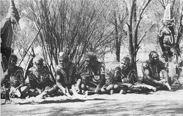
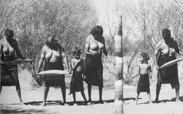

第一章 アボリジニーと神秘的な世界
４、「ドリーミング」（神話）の世界
ドリーミングによると、ドリームタイム（神話の時代）には世界は形のな
い物体だったと伝えられる。海の近くに住む部族にとっては、世界は海の
ような存在であったし、内陸に住む部族の神話では、世界は特色のない平
坦なものだったと語られている。ドリームタイムとは創造の時代で形のな
い物体から生まれ出た精霊たちは世界を自由に動き回り、アボリジニーと
同じように狩りをしたり、道具を作ったり、ダンスをしたり、植物を採集
し武器を作り争ったり、結婚したり、子供を産み、儀式を行った。そのよ
うにして万物を創造し命を吹き込んでいった。それは地下から海に及んだ
り、空に舞い上がり天地を創造したりもした。精霊たちは人間の姿で現れ
るものもあれば、半獣や半鳥であったり植物と合体したものであったり、
さまざまだった。いろいろな動物や植物の特徴を持っていたので、草をか
んだり砂の上をぴょんぴょんはねて跳んだりもした。神話の中にはカンガ
ルー男やヘビ男などが登場しそれを物語っている。半獣の精霊たちの存在
は、それ自体の存在が信じられていたわけではなく、動物も人間と同等の
魂が与えられていると信じられていたのだ。
精霊たちひとりひとりの行動は、岩や山、水溜り、洞穴、砂の丘、木な
どの地形を創造し、自然環境を今日存在するような形に変えていった。ま
た、その行為は星などのありとあらゆる自然現象に変わっていった。すべ
ての景色の中に精霊たちが存在するのである。精霊たちはアボリジニーの
祖先でもある。各部族は自分が生まれ落ちた土地に関する創造の神話を持
っていて、神話に登場した精霊たちは自分たちの祖先であり、精霊たちは
その土地の動植物や岩や木などの祖霊となっているのだ。つまり、同じ土
地に住む人間と動植物、自然界のすべては根源的に魂を同じくすると考え
られている。一つの魂から生まれ出たあらゆる命は等しい存在である。人
間だけが抜き出た存在なのではなく、土の中から命を育むどんな植物もま
た創造の祖先たちが生み出した尊い命なのである。砂漠では一輪の花を口
に含み喉を潤す。このようにそれぞれの生命体は互いに助け合って生かさ
れている。すべてのものが魂を持っていると信じることにより、ありとあ
らゆる命を大切にする思いが生まれるのだ。
人は生れ落ちた場所と、それを創造した精霊たちと深い縁を持ち、その
土地を守るために生まれてきたとアボリジニーは信じる。精霊たちは人間
に、大地とその上に生きるすべての命の世話を託したのである。人として
生きる道は、その託された世話の責任をまっとうし次世代にすべての生命
がバランスよく強調して受け渡すことにあるのだ。
祖先の精霊たちは天地創造が終わると、地下に潜ったり天に戻ったり、
木や岩や鳥に姿を変えたりした。祖先が通った道は「ドリームトラック」
と呼ばれ、大陸全体とアボリジニーをつなぐものとして考えられている。
祖先が足を止めた場所は、聖地として特別な意味を持つ。聖地とはアボリ
ジニーにとって祖先がその力と存在を表した印であり、祖先により清めら
れたエネルギーの磁場だとも言える。アボリジニーは聖地に行くことによ
って、祖先の息づかいを感じ、祖先に感謝し、「今、在る時」に静かに浸
ることができる。天と地の間に存在する自分を感じつつ大自然と一体化し、
またそのエネルギーをもらい生きる糧とするのだ。
大地を仕切る境界線だとか柵だとかがなくても、アボリジニーは各部族
の狩猟や採集のできる領域というものがドリーミングによって正確に認識
されていた。ドリームタイムの歌や踊り、絵画、伝説を通して自分がその
土地とどういうつながりを持っているのかを子供の頃から彼らは知ってい
る。そして彼らは、ドリーミングの話に登場する祖先の旅を通して、どの
季節にどこに行けばどんな動物がいてどんな植物を採集できるのかという
生きる知恵を学んだ。
またアボリジニーは部族のドリーミングとは別に個人が自分の出生に関
係するドリーミングを持っている。それはトーテムと呼ばれ、ある特定の
地から来た人間集団と動植物の種は、同じ祖先であるとの信仰心を表すの
に使われている。例えば、母親が採集の途中、トカゲのドリーミングを持
っている岩の上で休んでいる最中に胎動を感じたならば、生まれてくる子
供はトカゲと密接な関係があり、ドリーミングの受け取り手となってその
掟を守らなくてはならない。それぞれのトーテムの種の話に関して儀式を
行い、知識を維持する義務がある。このようにして、あらゆる種の存在と
環境は全てにわたって安全に守られていく。同じ土地に住む人間と動植物
と精神性は、本質的な部分で同じだということを感じていくのだ。
図１４：アボリジニー男性の儀式

図１５：アボリジニー女性と子供の儀式

|